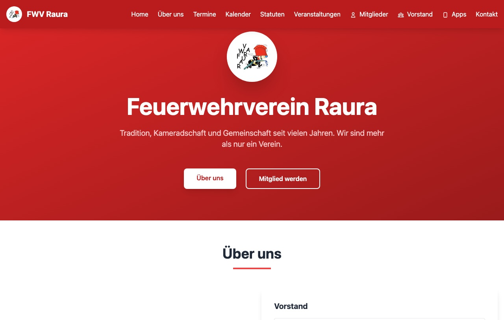
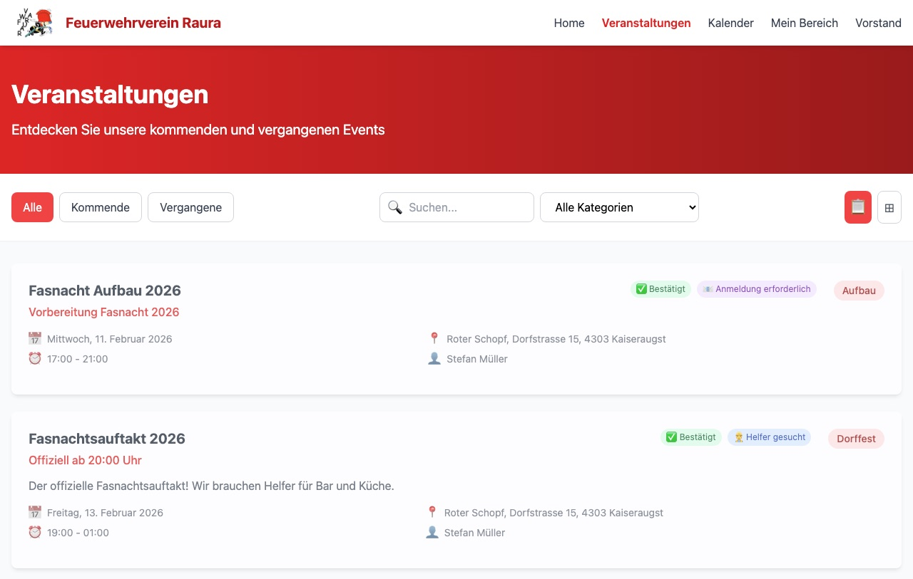
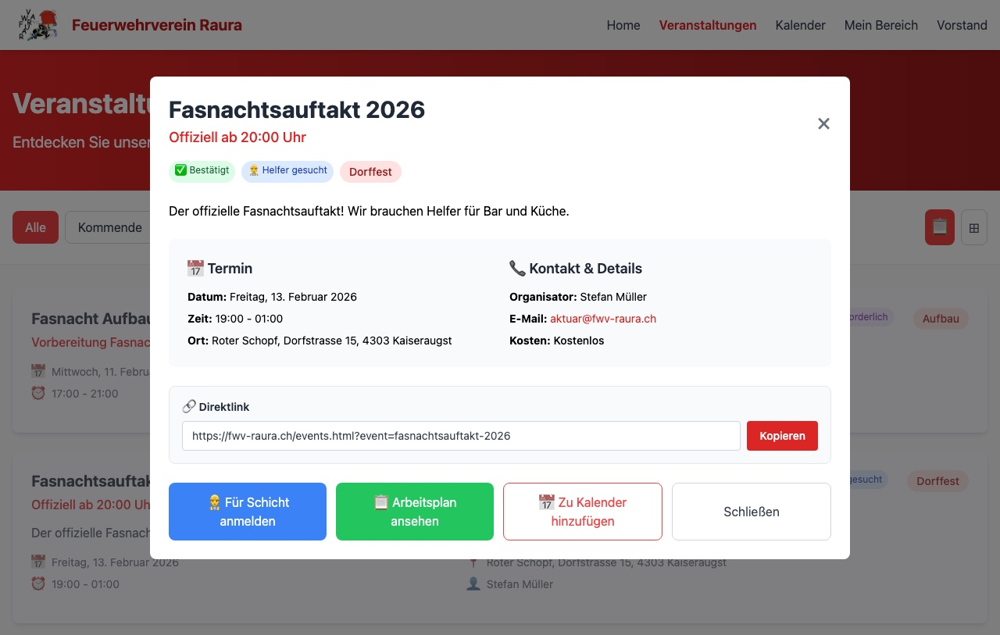
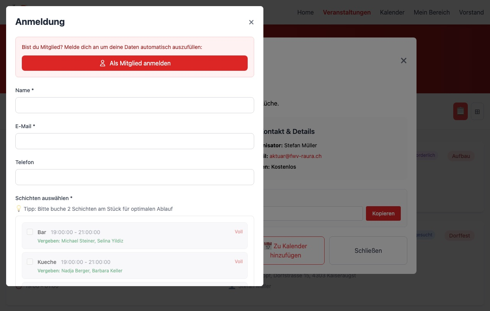
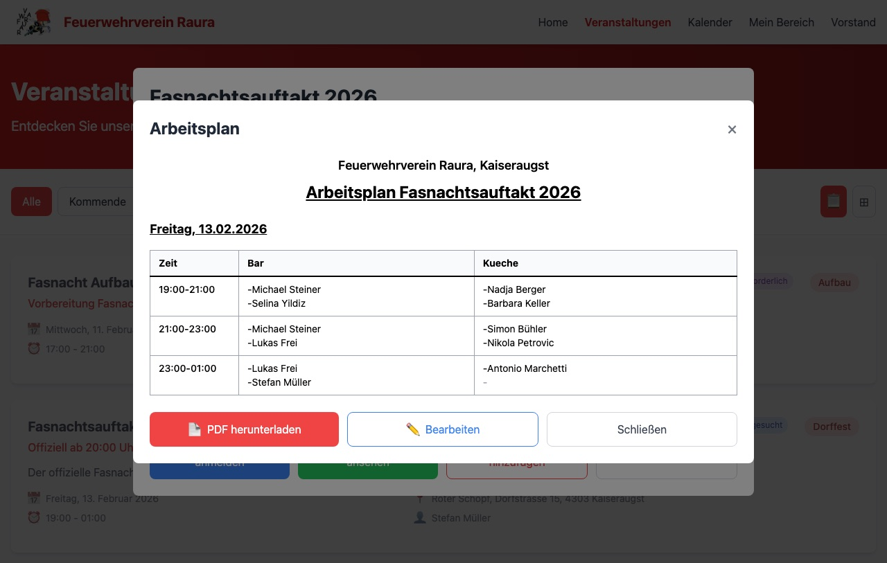
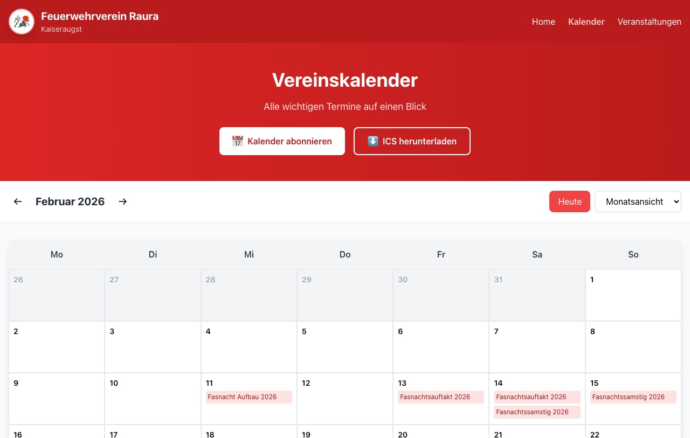
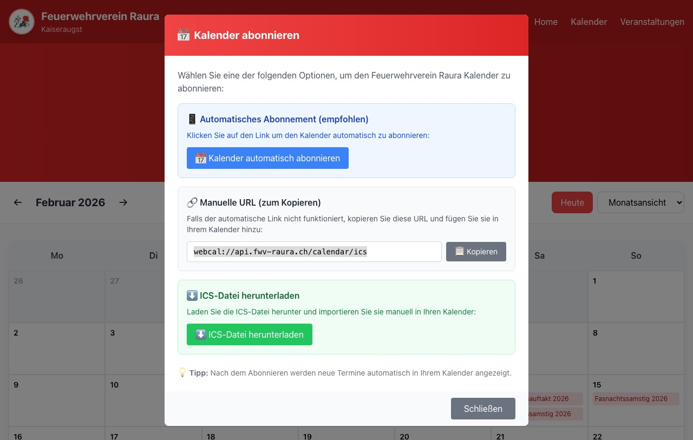
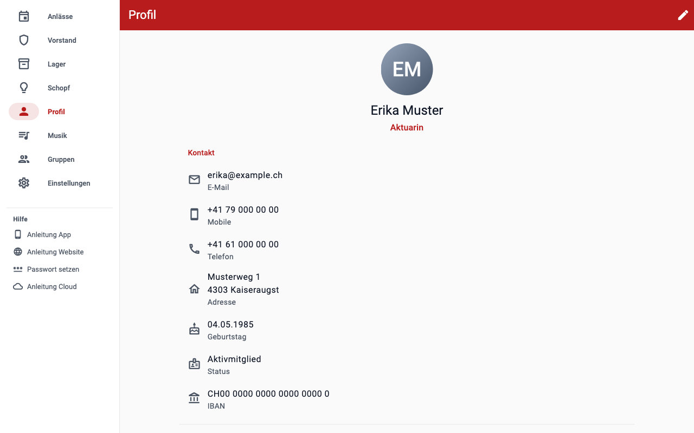
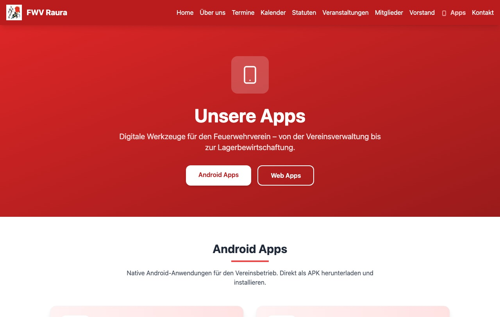
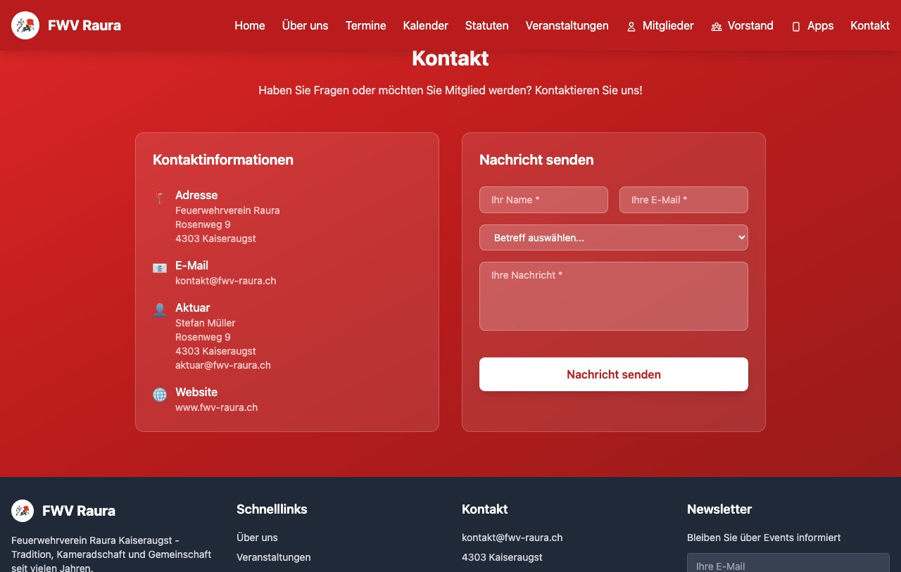

Was wo steht
Die Website ist unter www.fwv-raura.ch erreichbar und
braucht keine Anmeldung — bis auf einen Bereich.
Die Startseite trägt alles Wichtige selbst: Über uns, die Termine der nächsten Zeit, die Statuten und zuunterst den Kontakt. Die Einträge oben springen zu diesen Abschnitten, statt eine neue Seite zu öffnen.
Auf eigene Seiten führen:
- Veranstaltungen — die vollständige Liste aller Anlässe mit Suche und Filtern.
- Kalender — dieselben Termine als Monatsansicht, zum Abonnieren.
- Mitglieder beziehungsweise Mein Bereich — die Mitglieder-App im Browser. Nur hier wird eine Anmeldung verlangt.
- Vorstand — der Arbeitsbereich des Vorstands. Geschützt und nur für den Vorstand; wer kein Amt hat, kommt am Anmeldefenster nicht vorbei.
- Apps — die Programme des Vereins.
Auf den Unterseiten ist die Leiste kürzer und führt zurück auf Home; erreichbar bleibt von dort alles.

Alle Anlässe auf einen Blick
Unter Veranstaltungen steht jeder Anlass des Vereins untereinander: Titel, Datum, Zeit, Ort und wer ihn organisiert.
Standardmässig sind alle Anlässe eingeblendet. Über die drei Schalter links wechselst du auf Kommende oder Vergangene — Ersteres ist meist das, was du willst. Daneben liegen ein Suchfeld und ein Auswahlfeld für die Kategorie (Dorffest, Aufbau, Vereinsausflug und so weiter).
Ganz rechts schaltest du zwischen der Liste und einer Kachelansicht um. Der Inhalt ist derselbe, nur dichter gesetzt.
Die farbigen Merker an jedem Anlass sagen, woran du bist: Bestätigt heisst, der Termin steht; Helfer gesucht heisst, es fehlen noch Leute für die Schichten; Anmeldung erforderlich heisst, ohne Eintrag geht es nicht.

Ein Anlass im Einzelnen
Ein Klick auf einen Anlass öffnet ein Fenster mit allem, was dazu bekannt ist: Termin und Zeit, Ort mit Adresse, Kosten sowie Name und E-Mail des Organisators.
Im Feld Direktlink steht eine Adresse, die genau diesen Anlass öffnet — praktisch, um ihn in einer Nachricht weiterzugeben. Kopieren legt sie in die Zwischenablage.
Unten stehen die Schaltflächen: sich für eine Schicht eintragen, den Arbeitsplan ansehen, oder den Termin in den eigenen Kalender übernehmen.

Für eine Schicht eintragen
Bei Anlässen, für die Helfer gesucht werden, führt Für Schicht anmelden zum Formular. Dafür braucht es kein Konto — auch Angehörige und Bekannte können sich so eintragen.
- Name und E-Mail eintragen, Telefon ist freiwillig.
- Unter Schichten auswählen ankreuzen, wann du kannst. Volle Schichten sind als Voll gekennzeichnet und zeigen, wer schon eingeteilt ist.
- Anmeldung absenden drücken. Du bekommst eine E-Mail.
Bist du Mitglied, lohnt sich der rote Knopf ganz oben: Als Mitglied anmelden füllt Name und Kontaktdaten aus deinem Profil ein. Nach dem Absenden kommst du in Mein Bereich. Dort steht die Anmeldung im Profil unter Meine Anmeldungen.
Als Gast
Ohne Mitglieder-Anmeldung kommt die Bestätigung als E-Mail mit einem Link. Erst wenn du darauf klickst, gilt die Anmeldung. Das Formular sagt dir das mit Fast geschafft!.
Gibst du als Gast eine Adresse ein, die zu einem Mitglied gehört, meldet die Seite Mitglied erkannt!. Dann hast du zwei Wege:
- Zum Mitglieder-Login öffnet Mein Bereich. Dort meldest du dich an und trägst dich beim Anlass ein.
- Trotzdem als Gast anmelden schickt die Anmeldung so ab, wie du sie eingegeben hast.

Den Arbeitsplan ansehen
Arbeitsplan ansehen zeigt die fertige Einteilung als Tabelle: links die Zeitblöcke, in den Spalten die Posten — Bar, Küche und was der Anlass sonst braucht — und in den Feldern, wer eingeteilt ist.
PDF herunterladen erzeugt daraus ein Blatt zum Ausdrucken und Aufhängen. Bearbeiten führt weiter auf das Dashboard des Anlasses — dort lässt sich die Einteilung ändern, was aber nur denen offensteht, die den Anlass organisieren. Als Mitglied geht das einfacher in Mein Bereich unter Organisator.

Der Vereinskalender
Der Kalender zeigt denselben Bestand als Monatsansicht. Mit den Pfeilen links neben dem Monatsnamen blätterst du vor und zurück, Heute springt zum laufenden Monat. Im Auswahlfeld rechts lässt sich statt des Monatsrasters eine Listenansicht wählen.
Termine stehen als farbige Balken im jeweiligen Tag. Ein Klick darauf öffnet dasselbe Detailfenster wie auf der Veranstaltungsseite.

Termine in den eigenen Kalender holen
Statt hier nachzuschlagen, kannst du den Vereinskalender abonnieren: Die Termine erscheinen dann in deinem Kalender am Telefon oder Rechner und aktualisieren sich von selbst, wenn der Verein etwas ändert.
Kalender abonnieren oben auf der Kalenderseite bietet drei Wege an:
- Automatisch — ein Klick, das Gerät öffnet die eigene Kalender-App und fragt nach. Der bequemste Weg.
- Manuelle URL — falls der Klick nichts bewirkt:
webcal://api.fwv-raura.ch/calendar/icskopieren und in der Kalender-App unter „Kalender abonnieren“ einfügen. - ICS-Datei — lädt die Termine einmalig herunter. Sie werden dann nicht mehr aktualisiert.

Mein Bereich — die App im Browser
Hinter Mein Bereich liegt die Mitglieder-App. Sie läuft direkt im Browser, du musst nichts installieren. Je nach Seite heisst der Eintrag oben Mitglieder oder Mein Bereich.
Oben bleibt der weisse Kopf der Website, darunter läuft die App. Auf einem grossen Bildschirm stehen ihre Bereiche links in einer Leiste, auf dem Telefon unten.


Anmelden
- Auf Mein Bereich oder Mitglieder klicken.
- Mit Vereinskonto anmelden drücken.
- Auf der Anmeldeseite des Vereins Benutzername und Passwort eingeben. Es ist dasselbe Konto wie in der App.
Benutzt du Mein Bereich mindestens alle 30 Tage, bleibst du angemeldet. Danach fragt die Seite wieder nach dem Passwort.
Was drin ist
Mein Bereich kann genau dasselbe wie die App auf dem Telefon: Anlässe ansehen und sich eintragen, das Profil mit deinen Daten und Meine Anmeldungen, die Zugänge, die Benachrichtigungen und mehr. Was du hier änderst, gilt auch in der App.
Organisierst du einen Anlass, verwaltest du ihn unter Organisator: Anmeldungen genehmigen, Leute von Hand eintragen, alle benachrichtigen.
Wie das alles im Einzelnen geht, steht in der Anleitung App. Sie gilt für Mein Bereich genauso. Links unter Hilfe findest du die Anleitungen auch direkt in Mein Bereich.
Die Apps
Unter Apps liegen die Programme des Vereins zum Herunterladen — die Mitglieder-App für Android sowie die Werkzeuge für den Vereinsbetrieb, etwa die Küchenanzeige.
Die Mitglieder-App gibt es auf zwei Wegen: über den Play Store, für den du dich zuerst selbst freischaltest, oder mit APK herunterladen direkt als Datei. Die Seite zeigt beide Schritt für Schritt.
Was in der Mitglieder-App steckt und wie sie eingerichtet wird, steht in der eigenen App-Anleitung.

Fragen, Anliegen, Mitglied werden
Ganz unten auf der Startseite steht das Kontaktformular. Im Feld Betreff auswählen gibt es neben der allgemeinen Anfrage auch den Punkt für eine Mitgliedschaft — wählst du den, erscheint statt des Nachrichtenfelds ein Formular mit den Angaben, die der Verein für eine Aufnahme braucht.
Daneben stehen die Postadresse des Vereins, die allgemeine Adresse
kontakt@fwv-raura.ch und der Aktuar als direkter
Ansprechpartner.
